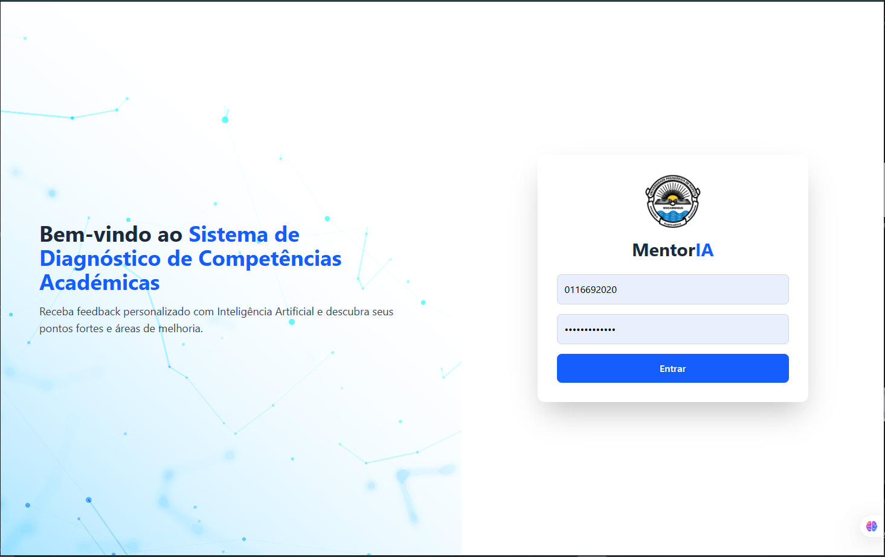
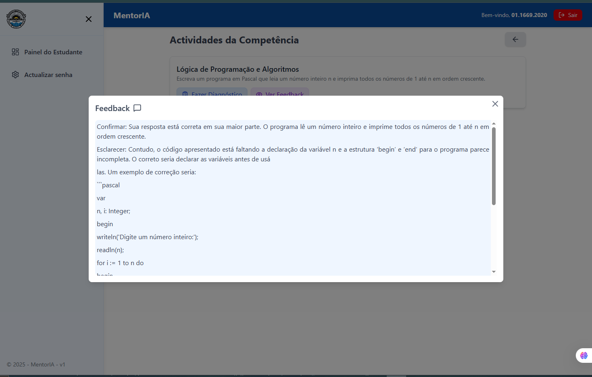
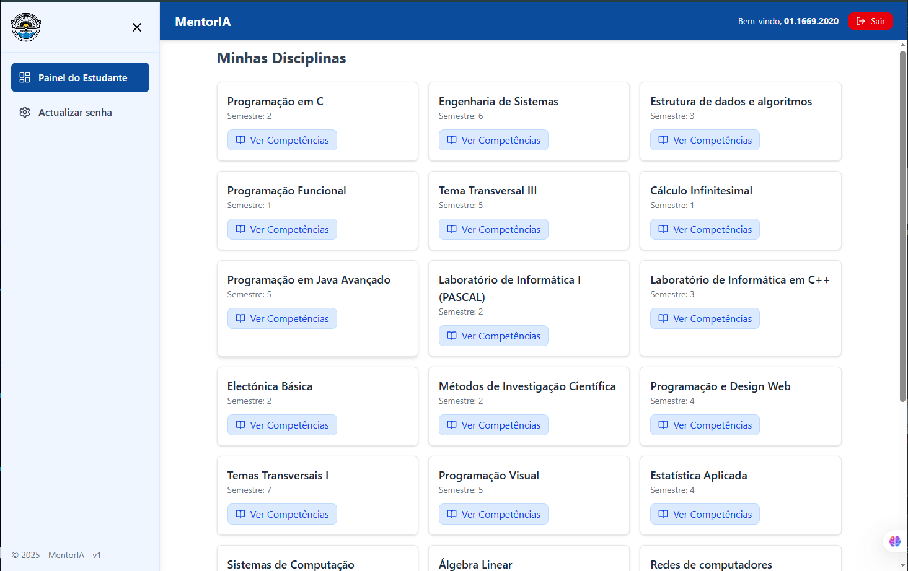
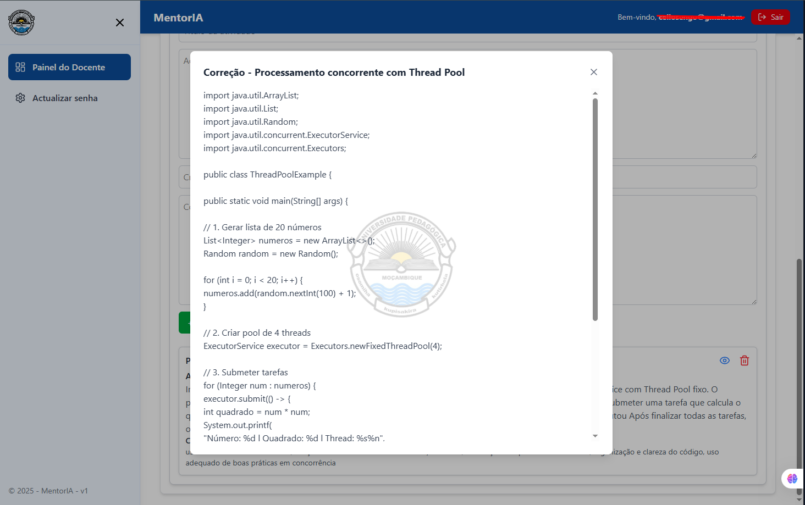

Sistema de Diagnóstico de Competências Académicas com Inteligência Artificial




O ensino superior em Moçambique, particularmente na Universidade Pedagógica de Maputo (UP-Maputo), enfrenta desafios relacionados com o elevado número de estudantes por turma. Muitas dificuldades de aprendizagem permanecem não identificadas a tempo, dificultando o acompanhamento individualizado.
O MentorIA foi concebido como uma plataforma de apoio pedagógico baseada em Inteligência Artificial, permitindo aos docentes diagnosticar competências académicas e oferecer feedback personalizado aos estudantes. O sistema atua como assistente inteligente, realizando autoavaliações e simulando orientação individual do professor.
Participei no desenvolvimento da plataforma MentorIA, uma solução de apoio pedagógico baseada em Inteligência Artificial. Contribuí para o desenvolvimento da API em ASP.NET Core, integração entre frontend e backend, autenticação de utilizadores e integração da OpenAI API para geração automatizada de feedback pedagógico contextualizado.
A componente de Inteligência Artificial envolveu a construção dinâmica de prompts estruturados, preparação do contexto enviado ao modelo de linguagem e definição de instruções para orientar a geração das respostas. O sistema utiliza informações da actividade, resposta do estudante, critérios de avaliação e, quando disponível, a correcção do docente para produzir feedback personalizado.
O projecto proporcionou experiência prática na aplicação de Inteligência Artificial Generativa a uma solução real, incluindo integração de LLMs através de APIs, Prompt Engineering, processamento e persistência dos resultados gerados pela IA. Também foram considerados aspectos de qualidade das respostas, segurança, custo, desempenho e viabilidade da utilização de modelos de linguagem.
O MentorIA utiliza a OpenAI API para gerar feedback pedagógico contextualizado. Antes de efectuar a requisição, o sistema reúne os dados relevantes da actividade e constrói dinamicamente um prompt estruturado.
O contexto enviado ao modelo pode incluir o título e enunciado da actividade, resposta do estudante, competências avaliadas, critérios definidos pelo docente e correcção docente, quando disponível.
As instruções do prompt orientam o modelo sobre como analisar a resposta e estruturar o feedback. A metodologia pedagógica definida para o sistema segue uma sequência de Confirmar, Esclarecer, Orientar e Ampliar, procurando tornar o feedback mais relevante e útil para o estudante.
Após a geração, o resultado é processado pela aplicação e armazenado na base de dados, associado ao estudante e à actividade correspondente. Este fluxo permite manter o histórico e a rastreabilidade dos resultados produzidos pela Inteligência Artificial.
Durante o desenvolvimento foi analisada a viabilidade da utilização de modelos de linguagem considerando factores como custo por utilização, consumo de tokens, desempenho e adequação ao caso de uso.
A escolha do modelo procurou equilibrar custo, desempenho, velocidade e qualidade das respostas, considerando também a possibilidade de utilização simultânea por vários utilizadores.